Design Lab North · studio pack
Picture only. Same clunks: notes, Push, live blips. For new customers live starts empty — identity, one square, words, then the first push. Notes sit in a side key, not in the windows. After it is live: one square becomes two, then three, then the clay bar changes, then you push again. The host loop is for when a site is already up. Pack is the first section film: the mark leaves a screen and sits on a box, a bottle, a tub.
Pack · landscape Pack · portrait New · landscape New · portrait New zip Host · landscape Host · portrait Host zip
First draft. Wordless. Real DLN mark. Screen on the left, pack on the right. Mark lifts, flies, lands. The object blips box → bottle → tub. Iterate here before a zip or the campus room.
Live is blank until you say go. Three notes build one page (one slate square). Those bars sit in a side key. First Push. Then three more notes: two squares, three squares, clay bar. A second key. Push again.
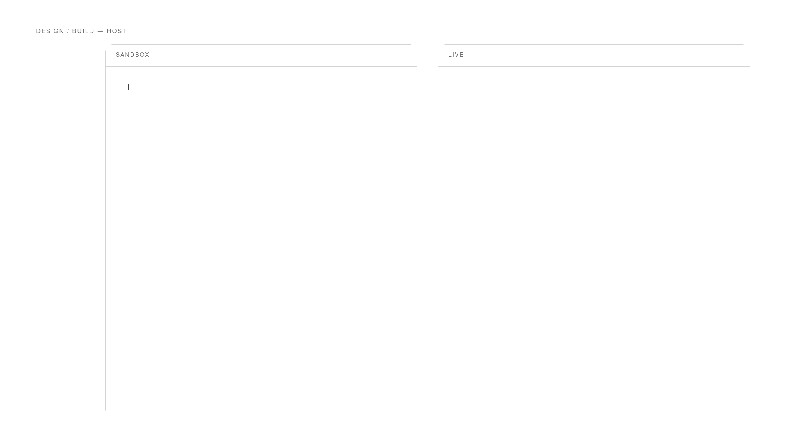
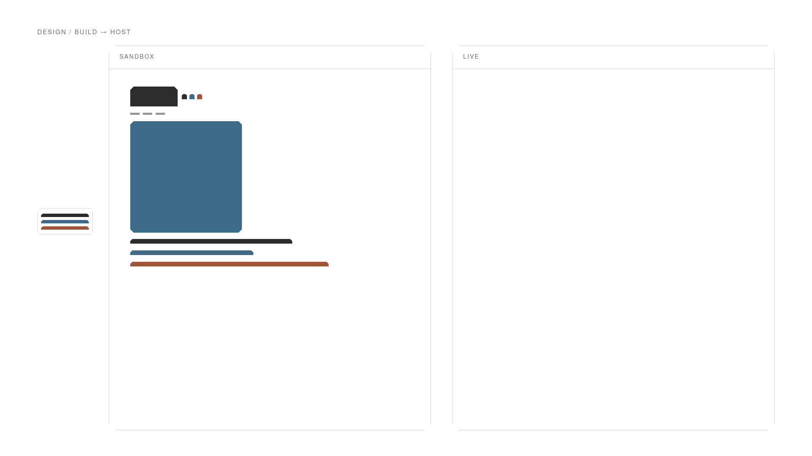
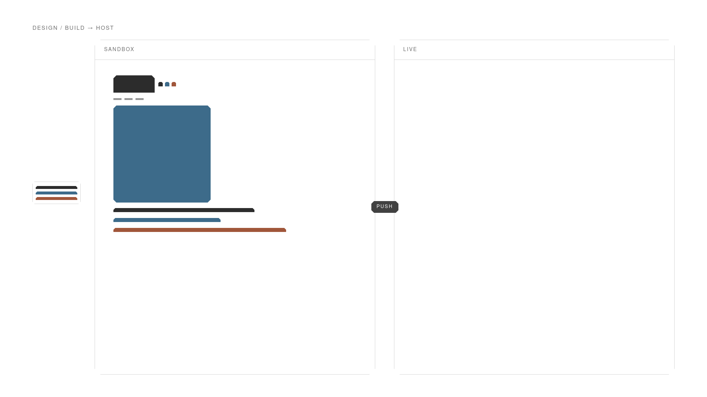
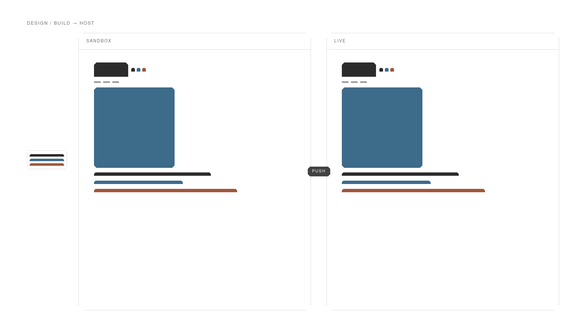
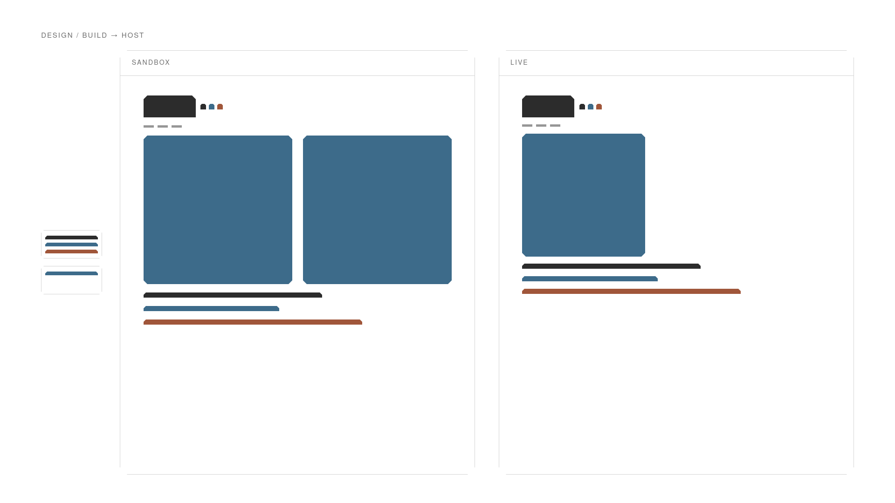
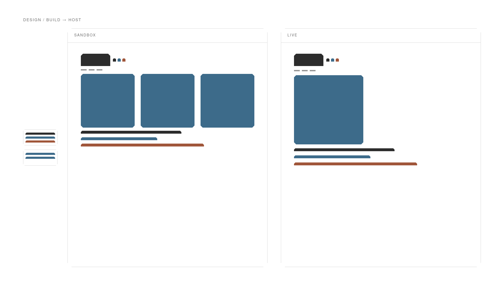
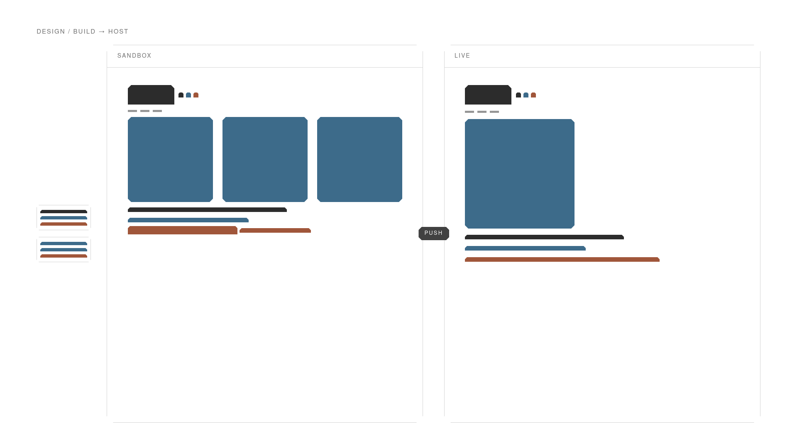
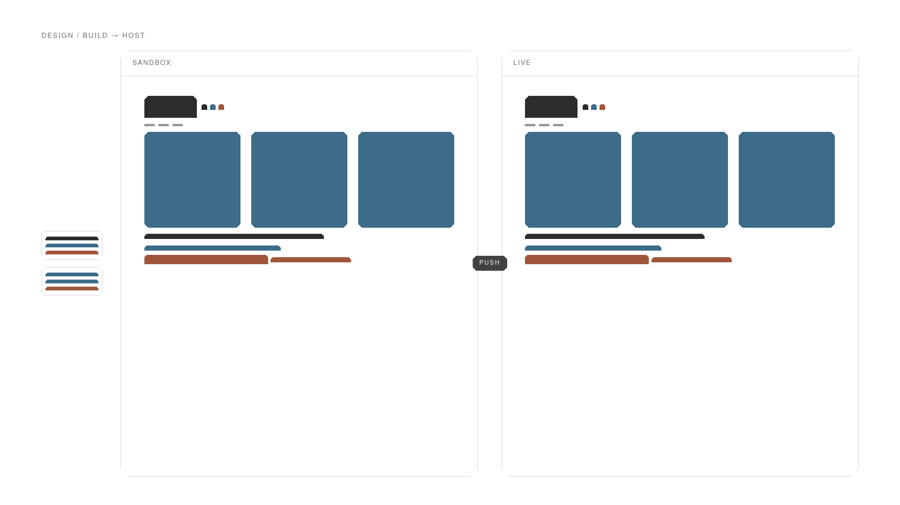
Sandbox on top. Side keys. One square, then two, then three, then Push again.
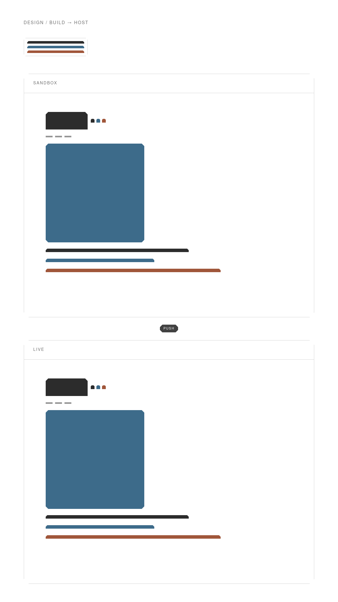
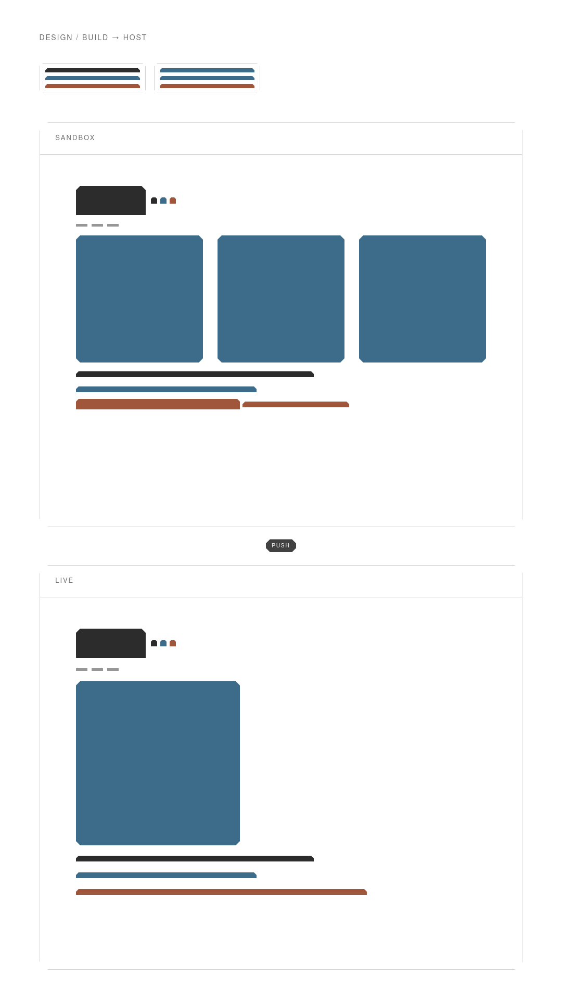
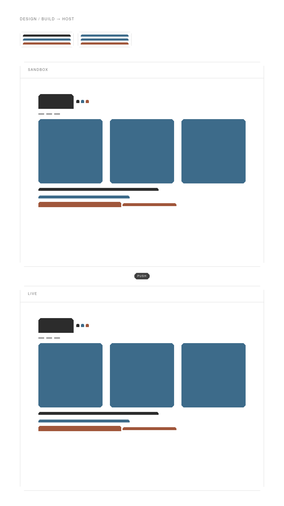
Sandbox on top. Same clunks. Live snaps after push.